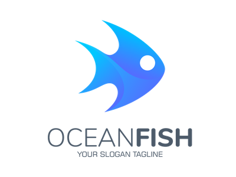

<mat-sidenav-container class="example-container" fullscreen>
  <mat-sidenav #sidenav mode="side" [opened]="opened" [fixedInViewport]="true" >
    <div class="logo-container">
      
    </div>
    <div class="button-container" >
      <mat-button-toggle-group #group="matButtonToggleGroup" [vertical]="true">
        <mat-button-toggle [style]="'{width: 100%}'" *ngFor="let button of buttons" [routerLink]="button.path" [value]="button.name" [aria-label]="button.name">
          <div class="unit-button">
            <mat-icon>{{button.icon}}</mat-icon>
            <h4>{{button.name}}</h4>
            <div class="box"></div>
          </div>
        </mat-button-toggle>
      </mat-button-toggle-group>
    </div>
  </mat-sidenav>

  <mat-sidenav-content>
    <app-toolbar (toggle)="setOpenStatus()"></app-toolbar>
    <div class="main-content">
      <ng-content main-content></ng-content>
    </div>
  </mat-sidenav-content>
</mat-sidenav-container>


